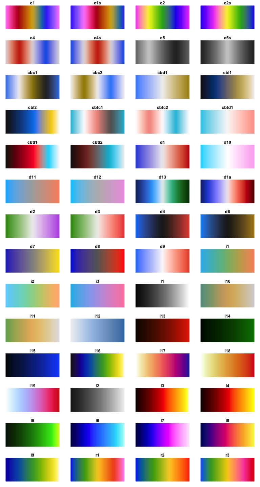

cetcolor
The cetcolor package is designed to bring to R the 56 colour maps created by Peter Kovesi that avoid points of locally high colour contrast leading to the perception of false anomalies in your data when there is none. The colour maps have been designed to avoid this phenomenon by having uniform perceptual contrast over their whole range.
Installation
The cetcolor package is available on both CRAN and GitHub. The CRAN version is considered stable while the GitHub version is in a state of development and may break.
You can install the stable version of the cetcolor package with:
install.packages("cetcolor")For the development version, you can opt for:
install.packages("remotes")
remotes::install_github("coatless-rpkg/cetcolor")Sample Usage
# Load the Library
library("cetcolor")
# Get RGB Hexadecimals for graphing
cet_pal(5, name = "blues")
#> [1] "#F1F1F1" "#C0D3EB" "#93B5DD" "#7197C1" "#3B7CB2"
# Sample use with ggplot2
library("ggplot2")
ggplot(faithfuld, aes(waiting, eruptions)) +
geom_raster(aes(fill = density)) +
theme_bw() + theme(panel.grid=element_blank()) -> g
library("gridExtra")
# Frequently used colour maps have "nicknames" see ?cet_color_maps
grid.arrange(
g + scale_fill_gradientn(colours = cet_pal(5, name = "fire")),
g + scale_fill_gradientn(colours = cet_pal(5, name = "inferno")),
g + scale_fill_gradientn(colours = cet_pal(5, name = "blues")),
g + scale_fill_gradientn(colours = cet_pal(5, name = "kgy")),
ncol = 2, nrow = 2
)
# Show a panel of possible values (without nicknames)
display_cet_all()
References
CET
-
CET Perceptually Uniform Colour Maps: Download Page
- Location of CSV data, references, and data.
-
colorcet for Python
- Shorthand naming of colour schemes and presentation of palettes
-
PerceptualColourMaps.jl by Peter Kovesi
- Referenced documentation and possible reimplementation of generation functions to avoid using CSV data.
R Colour Palettes
-
viridis(Source)- Provides MATLAB perceptually uniform colour maps in a manner that is similar to this package.
-
RColorBrewer(Source)- Function interface naming, e.g.
cet_pal(n, name), and colour map displays.
- Function interface naming, e.g.
-
scalesandggplot2- Proper ways to interface colour palettes with
ggplot2as shown forRColorBrewer.
- Proper ways to interface colour palettes with